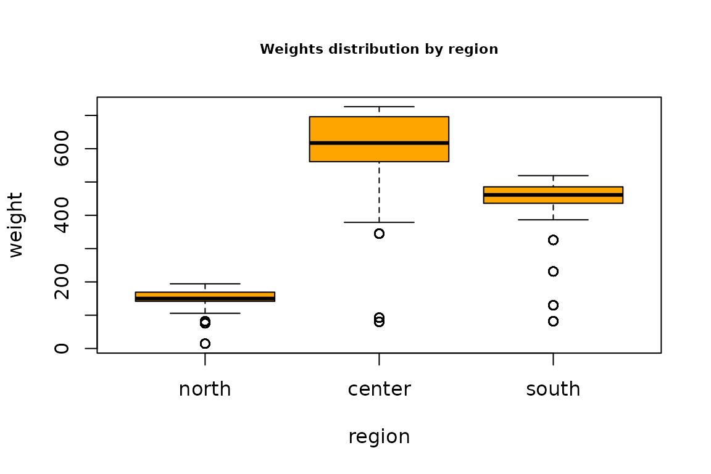

vignettes/R2BEAT_workflow_from_frame.Rmd
R2BEAT_workflow_from_frame.RmdThis vignette describes a generalized procedure making use of the methods implemented in the R package developed in the Italian National Institute, namely R2BEAT (“Multistage Sampling Allocation and PSU selection”).
This package allows to determine the optimal allocation of both Primary Stage Units (PSUs) and Secondary Stage Units (SSU), and also to perform a selection of the PSUs such that the final sample of SSU is of the self-weighting type, i.e. the total inclusion probabilities (as resulting from the product between the inclusion probabilities of the PSUs and those of the SSUs) are near equal for all SSUs, or at least those of minimum variability.
This general flow assumes that a sampling frame is available, containing, among the others, the following variables:
As for the last type of variables, of course their direct availability is not possible: instead, proxy variables will be present in the sampling frame, or the same variables with predicted values.
Having this sampling frame, the workflow is based on the following steps:
We make use of a synthetic population data frame (pop), that is available at the link:
https://github.com/barcaroli/R2BEAT/tree/master/data
## 'data.frame': 2258507 obs. of 13 variables:
## $ region : Factor w/ 3 levels "north","center",..: 1 1 1 1 1 1 1 1 1 1 ...
## $ province : Factor w/ 6 levels "north_1","north_2",..: 1 1 1 1 1 1 1 1 1 1 ...
## $ municipality : num 1 1 1 1 1 1 1 1 1 1 ...
## $ id_hh : Factor w/ 963018 levels "H1","H10","H100",..: 1 1 1 2 3 3 3 3 1114 1114 ...
## $ id_ind : int 1 2 3 4 5 6 7 8 9 10 ...
## $ stratum : Factor w/ 24 levels "1000","2000",..: 12 12 12 12 12 12 12 12 12 12 ...
## $ stratum_label: chr "north_1_6" "north_1_6" "north_1_6" "north_1_6" ...
## $ sex : int 1 2 1 2 1 1 2 2 1 1 ...
## $ cl_age : Factor w/ 8 levels "(0,14]","(14,24]",..: 3 7 8 5 4 6 6 4 4 1 ...
## $ active : num 1 1 0 1 1 1 1 1 1 0 ...
## $ income_hh : num 30488 30488 30488 21756 29871 ...
## $ unemployed : num 0 0 0 0 0 0 0 0 0 0 ...
## $ inactive : num 0 0 1 0 0 0 0 0 0 1 ...Great attention must be paid to the nature of the target variables, especially of the ‘factor’ type. In fact, the procedure here illustrated is suitable only when categorical variables are binary with values 0 and 1, supposing we are willing to estimate proportions of ‘1’ in the population. If factor variables are of other nature, then an error message is printed. Therefore, we have to handle the ‘work’ variable in this way: as values 0, 1 and 2 indicate respectively non labour force, active and inactive people, this is why we derived from ‘work’ the two binary variables, ‘active’ and ‘inactive’.
To prepare the inputs for the optimal allocation and selection of primary and secondary sampling units, the function ‘prepareInputToAllocation1’ is available.
For the execution of this function, it is necessary to assign values to the different parameters. Some of them can be directly derived by available data, but for others, namely ‘minimum’ (minimum number of SSUs to be interviewed in each selected PSU) the indication of the values is more difficult, without having any reference.
In order to orientate in the choice of the value to give to ‘minimum’, the function ‘sensitivity_min_SSU’ allows to perform a sensitivity analysis for this parameter.
To execute this function, the name of the parameter has to be given, together with the minimum and maximum value. On the basis of these minimum and maximum values, 10 different values will be used for carrying out the allocation. The output will be a graphical one.
This function requires also the definition of the precision constraints on the target values:
cv <- as.data.frame(list(DOM=c("DOM1","DOM2"),
CV1=c(0.02,0.03),
CV2=c(0.03,0.06),
CV3=c(0.03,0.06),
CV4=c(0.05,0.08)))
cv## DOM CV1 CV2 CV3 CV4
## 1 DOM1 0.02 0.03 0.03 0.05
## 2 DOM2 0.03 0.06 0.06 0.08The meaning of these constraints is that, once we select a sample and produce extimates, we expect a maximum coefficient of variation for the first variable (‘income_hh’) equal to 3% at national level (‘DOM1’) and to 4% at regional level (‘DOM2’); respectively 6% and 8% for the other three variables.
We can analyze the results in terms of first stage and second stage sizes by executing the following code:
sens_min_SSU <- sensitivity_min_SSU(
samp_frame=pop,
errors=cv,
id_PSU="municipality",
id_SSU="id_ind",
strata_var="stratum",
target_vars=c("income_hh","active","inactive","unemployed"),
deff_var="stratum",
domain_var="region",
delta=1,
deff_sugg=1,
min=30,
max=80,
plot=TRUE)By analysing the above graph we can decide which values are the most suitable for the sample design.
We therefore assign the following values to the required parameters:
samp_frame <- pop
id_PSU <- "municipality" # only one
id_SSU <- "id_ind" # only one
strata_var <- "stratum" # only one
target_vars <- c("income_hh","active","inactive","unemployed") # more than one
deff_var <- "stratum" # only one
domain_var <- "region" # only one
minimum <- 25 # minimum number of SSUs to be interviewed in each selected PSU
delta = 1 # average dimension of the SSU in terms of elementary survey units
deff_sugg <- 1.5 # suggestion for the deff valueWith already assigned parameters, we can execute the ‘prepareInputToAllocation1’ function:
inp <- prepareInputToAllocation1(samp_frame,
id_PSU,
id_SSU,
strata_var,
target_vars,
deff_var,
domain_var,
minimum,
delta,
deff_sugg)The function ‘prepareInputToAllocation1’ produces a list composed by six elements, stored in the ‘inp’ object:
(Actually, the ‘deff’ dataframe is not used in the following steps, it just remains for documentation purposes.)
Let us see the content of these objects:
head(inp$strata)## N M1 M2 M3 M4 S1 S2 S3 S4 COST CENS DOM1 DOM2 STRATUM
## 1000 197007 23959.87 0.6650322 0.2285807 0.10638708 22179.08 0.4719792 0.4199185 0.3083324 1 0 1 2 1000
## 2000 261456 20966.65 0.6709886 0.2297519 0.09925953 19624.65 0.4698541 0.4206732 0.2990102 1 0 1 2 2000
## 3000 115813 19814.73 0.6644591 0.2315975 0.10394343 14754.88 0.4721792 0.4218532 0.3051871 1 0 1 2 3000
## 4000 17241 18732.72 0.6273418 0.2499275 0.12273070 13462.74 0.4835122 0.4329708 0.3281278 1 0 1 2 4000
## 5000 101067 22070.31 0.6134445 0.2338845 0.15267100 17187.98 0.4869603 0.4232996 0.3596701 1 0 1 2 5000
## 6000 47218 21069.07 0.6135796 0.2348469 0.15157355 17342.74 0.4869288 0.4239031 0.3586070 1 0 1 2 6000
inp$deff## STRATUM DEFF1 DEFF2 DEFF3 DEFF4 b_nar
## 1 1000 1.5 1.5 1.5 1.5 4925.17500
## 12 2000 1.5 1.5 1.5 1.5 1005.60000
## 18 3000 1.5 1.5 1.5 1.5 222.71731
## 19 4000 1.5 1.5 1.5 1.5 47.89167
## 20 5000 1.5 1.5 1.5 1.5 2526.67500
## 21 6000 1.5 1.5 1.5 1.5 786.96667
## 22 7000 1.5 1.5 1.5 1.5 168.72222
## 23 8000 1.5 1.5 1.5 1.5 69.78421
## 24 9000 1.5 1.5 1.5 1.5 4641.65000
## 2 10000 1.5 1.5 1.5 1.5 883.58333
## 3 11000 1.5 1.5 1.5 1.5 174.49153
## 4 12000 1.5 1.5 1.5 1.5 57.65700
## 5 13000 1.5 1.5 1.5 1.5 5146.65000
## 6 14000 1.5 1.5 1.5 1.5 1049.78750
## 7 15000 1.5 1.5 1.5 1.5 194.15625
## 8 16000 1.5 1.5 1.5 1.5 44.59672
## 9 17000 1.5 1.5 1.5 1.5 3055.85000
## 10 18000 1.5 1.5 1.5 1.5 618.79167
## 11 19000 1.5 1.5 1.5 1.5 189.70676
## 13 20000 1.5 1.5 1.5 1.5 55.32091
## 14 21000 1.5 1.5 1.5 1.5 2757.20000
## 15 22000 1.5 1.5 1.5 1.5 696.51667
## 16 23000 1.5 1.5 1.5 1.5 240.55000
## 17 24000 1.5 1.5 1.5 1.5 48.19583
inp$effst## STRATUM EFFST1 EFFST2 EFFST3 EFFST4
## 1 1000 1 1 1 1
## 2 2000 1 1 1 1
## 3 3000 1 1 1 1
## 4 4000 1 1 1 1
## 5 5000 1 1 1 1
## 6 6000 1 1 1 1
## 7 7000 1 1 1 1
## 8 8000 1 1 1 1
## 9 9000 1 1 1 1
## 10 10000 1 1 1 1
## 11 11000 1 1 1 1
## 12 12000 1 1 1 1
## 13 13000 1 1 1 1
## 14 14000 1 1 1 1
## 15 15000 1 1 1 1
## 16 16000 1 1 1 1
## 17 17000 1 1 1 1
## 18 18000 1 1 1 1
## 19 19000 1 1 1 1
## 20 20000 1 1 1 1
## 21 21000 1 1 1 1
## 22 22000 1 1 1 1
## 23 23000 1 1 1 1
## 24 24000 1 1 1 1
inp$rho## STRATUM RHO_AR1 RHO_NAR1 RHO_AR2 RHO_NAR2 RHO_AR3 RHO_NAR3 RHO_AR4 RHO_NAR4
## 1 1000 1 0.0032494875 1 0.00001260175649 1 0.0000003631192 1 0.000039120880
## 2 2000 1 0.0028554017 1 0.00150936389450 1 0.0007420929883 1 0.000937018761
## 3 3000 1 0.0069678726 1 0.00162968276279 1 0.0006469515878 1 0.002837431259
## 4 4000 1 0.0114552934 1 0.00578473329221 1 0.0019797687826 1 0.008962657055
## 5 5000 1 0.0002677333 1 0.00000001682475 1 0.0000029484212 1 0.000003404961
## 6 6000 1 0.0057050500 1 0.00004270905958 1 0.0000397945795 1 0.000194411580
## 7 7000 1 0.0041928513 1 0.00335650970751 1 0.0013094132833 1 0.001811885741
## 8 8000 1 0.0047238668 1 0.00232954042415 1 0.0018778264665 1 0.002170139711
## 9 9000 1 0.0000000000 1 0.00000000000000 1 0.0000000000000 1 0.000000000000
## 10 10000 1 0.0036846052 1 0.00159042535852 1 0.0008341965831 1 0.001542112124
## 11 11000 1 0.0106855950 1 0.00108932726442 1 0.0010329547671 1 0.001443153086
## 12 12000 1 0.0248038343 1 0.00234284567982 1 0.0020173346363 1 0.003133182814
## 13 13000 1 0.0000000000 1 0.00000000000000 1 0.0000000000000 1 0.000000000000
## 14 14000 1 0.0006512162 1 0.00089486265511 1 0.0005406860974 1 0.000374792839
## 15 15000 1 0.0068491200 1 0.00099219098192 1 0.0007727553419 1 0.000804727789
## 16 16000 1 0.0136596351 1 0.00303718119769 1 0.0021714455040 1 0.003432476610
## 17 17000 1 0.0000000000 1 0.00000000000000 1 0.0000000000000 1 0.000000000000
## 18 18000 1 0.0049434365 1 0.00437892168554 1 0.0002362549576 1 0.003892389733
## 19 19000 1 0.0157809669 1 0.01068408388378 1 0.0027579762296 1 0.008247327069
## 20 20000 1 0.0103417224 1 0.01400092460177 1 0.0044279712391 1 0.010470589088
## 21 21000 1 0.0000000000 1 0.00000000000000 1 0.0000000000000 1 0.000000000000
## 22 22000 1 0.0004350194 1 0.00362953805252 1 0.0011558770239 1 0.001149223429
## 23 23000 1 0.0069095241 1 0.00300292420693 1 0.0023502401768 1 0.003027075348
## 24 24000 1 0.0127711611 1 0.01070575411782 1 0.0017807607239 1 0.007809884541
inp$des_file## STRATUM STRAT_MOS DELTA MINIMUM
## 1 1000 197007 1 25
## 2 2000 261456 1 25
## 3 3000 115813 1 25
## 4 4000 17241 1 25
## 5 5000 101067 1 25
## 6 6000 47218 1 25
## 7 7000 30370 1 25
## 8 8000 26518 1 25
## 9 9000 92833 1 25
## 10 10000 106030 1 25
## 11 11000 205900 1 25
## 12 12000 57657 1 25
## 13 13000 102933 1 25
## 14 14000 83983 1 25
## 15 15000 186390 1 25
## 16 16000 108816 1 25
## 17 17000 61117 1 25
## 18 18000 74255 1 25
## 19 19000 140383 1 25
## 20 20000 60853 1 25
## 21 21000 55144 1 25
## 22 22000 41791 1 25
## 23 23000 72165 1 25
## 24 24000 11567 1 25
head(inp$psu_file)## PSU_ID STRATUM PSU_MOS
## 1 1 12000 1546
## 2 2 12000 936
## 3 3 12000 367
## 4 4 10000 13032
## 5 5 12000 678
## 6 6 11000 3193It may happen that the population in strata (variable ‘N’ in ‘inp$strata’ dataset) and the one derived by the PSU dataset (variable ‘STRAT_MOS’ in ‘inp$des_file’ dataset) are not the same.
We can check it by applying the function ‘check_input’ in this way:
newstrata <- check_input(strata=inp$strata,
des=inp$des_file,
strata_var_strata="STRATUM",
strata_var_des="STRATUM")##
## --------------------------------------------------
## Differences between population in strata and PSUs
## --------------------------------------------------
## STRATUM N_in_strata N_in_PSUs relative_difference
## 1 1000 197007 197007 0
## 2 10000 106030 106030 0
## 3 11000 205900 205900 0
## 4 12000 57657 57657 0
## 5 13000 102933 102933 0
## 6 14000 83983 83983 0
## 7 15000 186390 186390 0
## 8 16000 108816 108816 0
## 9 17000 61117 61117 0
## 10 18000 74255 74255 0
## 11 19000 140383 140383 0
## 12 2000 261456 261456 0
## 13 20000 60853 60853 0
## 14 21000 55144 55144 0
## 15 22000 41791 41791 0
## 16 23000 72165 72165 0
## 17 24000 11567 11567 0
## 18 3000 115813 115813 0
## 19 4000 17241 17241 0
## 20 5000 101067 101067 0
## 21 6000 47218 47218 0
## 22 7000 30370 30370 0
## 23 8000 26518 26518 0
## 24 9000 92833 92833 0
##
## --------------------------------------------------
## Population of PSUs has been attributed to strataUsing the function ‘beat.2st’ in ‘R2BEAT’ package we can perform the optimization of PSU and SSU allocation in strata:
inp$des_file$MINIMUM <- 25
minPSUstrat = 2
alloc <- beat.2st(stratif = inp$strata,
errors = cv,
des_file = inp$des_file,
psu_file = inp$psu_file,
rho = inp$rho,
deft_start = NULL,
effst = inp$effst,
minPSUstrat,
minnumstrat = 2)## iterations PSU_SR PSU NSR PSU Total SSU
## 1 0 0 0 0 7836
## 2 1 104 116 220 8002
## 3 2 109 120 229 7999This is the sensitivity of the solution:
alloc$sensitivity## Type Dom V1 V2 V3 V4
## 2 DOM1 1 1 0 1 1
## 6 DOM2 1 1 0 1 1148
## 10 DOM2 2 1 0 1 239
## 14 DOM2 3 26 1 186 1i.e., for each domain value and for each variable it is reported the gain in terms of reduction in the sample size if the corresponding precision constraint is reduced of 10%.
These are the expected values of the coefficients of variation:
alloc$expected## Type Dom V1 V2 V3 V4
## 2 DOM1 1 0.0118 0.0100 0.0262 0.0386
## 6 DOM2 1 0.0121 0.0074 0.0259 0.0800
## 10 DOM2 2 0.0259 0.0213 0.0530 0.0799
## 14 DOM2 3 0.0299 0.0342 0.0599 0.0469Using the function ‘select_PSU’ execute the selection of PSU in strata:
set.seed(1234)
sample_1st <- select_PSU(alloc, type="ALLOC", pps=TRUE)This is the overall sample design:
sample_1st$PSU_stats## STRATUM PSU PSU_SR PSU_NSR SSU SSU_SR SSU_NSR
## 1 1000 2 2 0 283 283 0
## 2 2000 13 13 0 402 402 0
## 3 3000 8 0 8 200 0 200
## 4 4000 2 0 2 50 0 50
## 5 5000 2 2 0 191 191 0
## 6 6000 3 3 0 86 86 0
## 7 7000 3 1 2 75 25 50
## 8 8000 2 0 2 50 0 50
## 9 9000 1 1 0 549 549 0
## 10 10000 6 6 0 578 578 0
## 11 11000 47 25 22 1228 678 550
## 12 12000 16 0 16 400 0 400
## 13 13000 1 1 0 693 693 0
## 14 14000 4 4 0 569 569 0
## 15 15000 45 39 6 1324 1174 150
## 16 16000 34 0 34 850 0 850
## 17 17000 1 1 0 125 125 0
## 18 18000 6 6 0 156 156 0
## 19 19000 14 0 14 350 0 350
## 20 20000 6 0 6 150 0 150
## 21 21000 1 1 0 111 111 0
## 22 22000 3 3 0 92 92 0
## 23 23000 7 1 6 175 25 150
## 24 24000 2 0 2 50 0 50
## 25 Total 229 109 120 8737 5737 3000Finally, we are able to select the Secondary Sample Units (the individuals) from the already selected PSUs (the municipalities). We proceed to select the sample in this way:
samp <- select_SSU(df=pop,
PSU_code="municipality",
SSU_code="id_ind",
PSU_sampled=sample_1st$sample_PSU)##
## --------------------------------
## Total PSUs = 229
## Total SSUs = 8737
## --------------------------------To check that the total amount of selected units with respect to the initial allocation:
nrow(samp)## [1] 8737## [1] 7999The difference is due to the fact that the constraint on the minimum number of SSUs to be selected for PSU has been enforced, thus resulting in an increase of the SSUs with respect to the optimal allocation.
We check also that the sum of weights equalizes the population size:
nrow(pop)## [1] 2258507
sum(samp$weight)## [1] 2258507This is the distribution of weights:
boxplot(weight ~ region, data=samp,col="orange")
title("Weights distribution by region",cex.main=0.7)